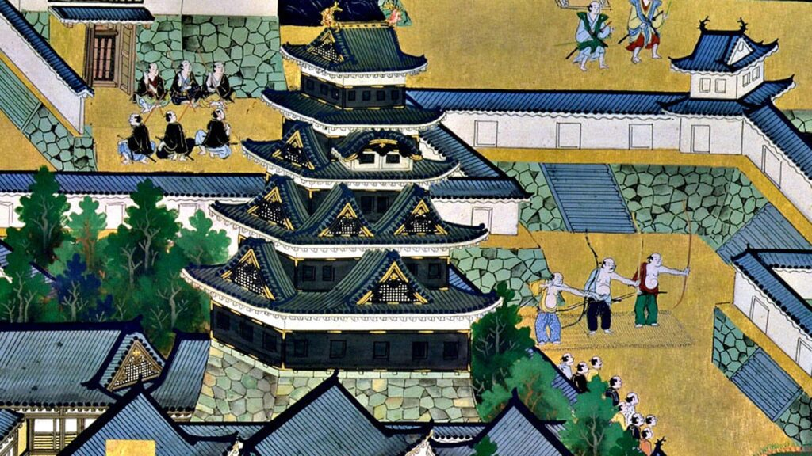
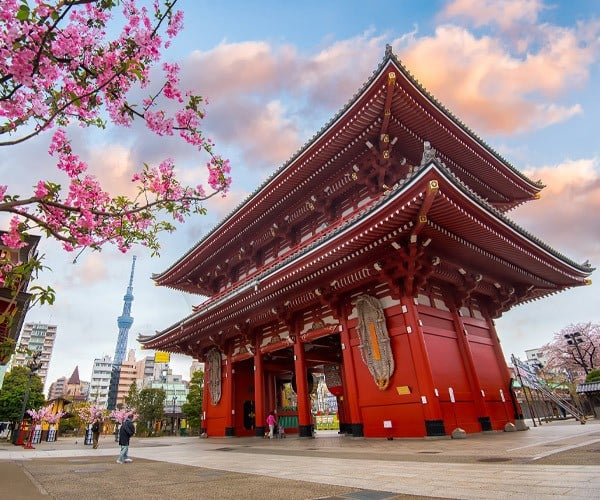
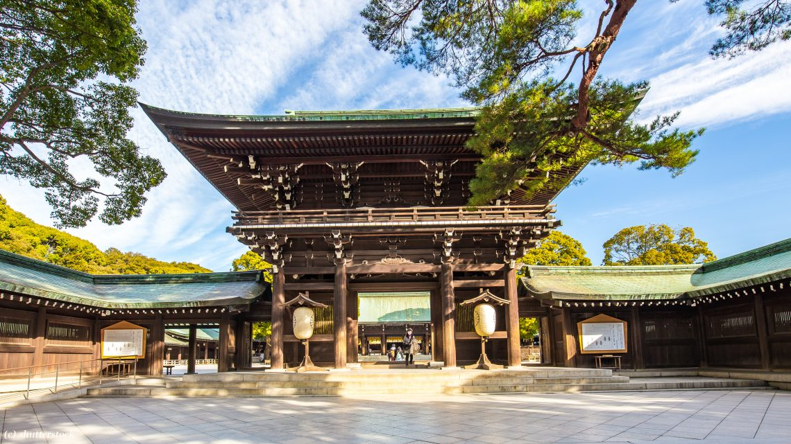

Za turiste, zanimljivo je istražiti istoriju Tokija kroz priče koje obuhvataju fascinantne kulturne spomenike, tradicije i događaje. Evo nekoliko aspekata istorije Tokija koji bi mogli biti posebno privlačni turistima:
Tokugawa Era i Edo Castle: Tokio, tada poznat kao Edo, bio je politički centar Japana tokom Edo perioda. Edo Castle, koji je sada poznat kao Kejserov dvorac (Imperial Palace), bio je sedište šoguna Tokugawa. Poseta dvorcu pruža uvid u moćnu prošlost grada i japanske istorije.
Asakusa i Senso-ji hram: Senso-ji hram u Asakusi je jedan od najstarijih hramova u Tokiju i simbol tradicionalne japanske arhitekture. Ima bogatu istoriju, a poseta ovom hramu omogućava turistima da dožive duh prošlosti i uče o japanskim verskim tradicijama.
Meiji Shrine: Meiji Shrine je posvećen caru Meiji i carici Shoken, a predstavlja važno mesto u japanskoj istoriji i kulturi. Izgrađen je u čast cara Meiji, koji je igrao ključnu ulogu u modernizaciji Japana tokom Meiji perioda. Poseta ovom svetom mestu omogućava turistima da uđu u kontakt sa duhovnom stranom japanske kulture.
